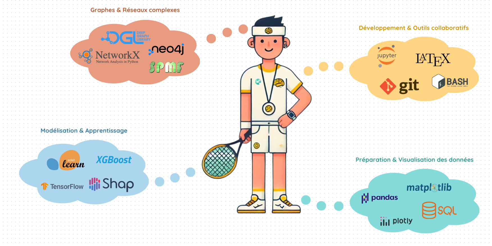

Applied data science, graphs and public data
Turning complex data into useful, readable and actionable models.
I am Lucas Potin, a Data Scientist and PhD in data mining, specialized in graph analysis, anomaly detection and public data, especially public procurement data.
About
An applied research profile, built to move from papers to real-world systems.
Trained as an engineer in applied mathematics at INSA Rouen, with a double degree in data science, I focus on concrete uses of data and models.
My doctoral work at the Laboratoire Informatique d'Avignon focused on graph analysis and public data, with an emphasis on detecting atypical behaviors in public procurement. I developed interpretable methods for graph classification and anomaly detection connected to transparency and governance challenges.
Corporate experience, international research in Scotland and student supervision shaped a versatile approach: scientific rigor, careful data work and a practical sense of delivery.
Stack
Tools and working environments

Selection
Projects
Applications and tools that make models, data and their limits easier to inspect.
DramaPang
- Problem
- Classify theatre plays from their relational structure, beyond text-only features.
- Method
- Build character networks and extract discriminant graph patterns to support interpretable prediction.
- Deliverable
- Streamlit demo application and source code available online.
Retail sales forecasting
- Problem
- Explore weekly sales forecasting by retail product family.
- Method
- Compare time-series and machine learning approaches, including Prophet, XGBoost and a baseline model.
- Deliverable
- Interactive Streamlit dashboard to visualize forecasts and compare approaches.
Siretizator
- Problem
- Reconcile public or private actor names described inconsistently in public procurement data.
- Method
- Normalize fields, apply approximate matching and expose an API to link agents to unique SIRET identifiers.
- Deliverable
- Deployed API and GitHub repositories for the local and lightweight versions.
Research
Publications and talks
Work on public data, graph mining and anomaly detection.
Processing and consolidation of open data on public procurement in France (2015-2023)
Data article introducing BeauAMP, a tabular dataset built from French online public procurement notices published between 2015 and 2023. It consolidates about one million contractual relationships and documents contracts, public buyers and awarded firms.
Authors: A. Deschamps, L. Potin
Article CodePattern-Based Graph Classification: Comparison of Quality Measures and Importance of Preprocessing
Graph classification article comparing 38 quality measures used to select discriminant graph patterns. It also proposes a clustering-based preprocessing step to reduce the number of processed patterns while preserving comparable performance and interpretability.
Authors: L. Potin, R. Figueiredo, V. Labatut, C. Largeron
Article CodeFOPPA: an open database of French public procurement award notices from 2010-2020
Data article presenting FOPPA, an open database of French public procurement award notices extracted from TED for 2010-2020. It describes major raw data quality issues and the automated or semi-automated processing used to produce a usable database.
Authors: L. Potin, V. Labatut, P.H. Morand, C. Largeron
Article PDF CodePattern mining for anomaly detection in graphs: Application to fraud in public procurement
Article introducing PANG, a supervised and explainable framework for anomaly detection in attributed graphs through pattern extraction. Its public procurement application uses relations between contracts to compensate for missing attributes and identify patterns associated with risk-prone situations.
Authors: L. Potin, R. Figueiredo, V. Labatut, C. Largeron
Article PDF CodeContact